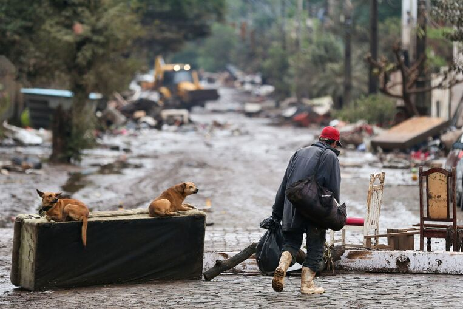
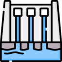
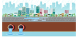

Principais Soluções de infraestrutura para a
Catástrofe das Enchentes no Rio Grande Do Sul
Voluntarie-se, fique informado e conheça soluções
como a construção de barragens, drenagem urbana e
reflorestamento de áreas críticas para proteger
vidas e comunidades no Rio Grande do Sul.

Impacto das Enchentes no Rio Grande do Sul:
+10 mil
Desabrigados
+400 mil
Desalojados
+2 milhões
De pessoas afetadas

Barragem
A construção de barragens é essencial para controlar
alagamentos, atuando como barreiras que regulam o fluxo
de água durante chuvas intensas. Elas previnem
transbordamentos de rios, protegendo comunidades e
preservando ecossistemas locais, além de reter água para
períodos de seca.

Drenagem urbana
A drenagem urbana é essencial para minimizar alagamentos
em áreas densamente povoadas. Ela consiste em sistemas
de captação e escoamento da água da chuva, como bueiros,
canais e galerias pluviais, que evitam o acúmulo de água
nas ruas e áreas baixas durante temporais.
Reflorestamento
O reflorestamento é uma medida eficaz para reduzir o
impacto de alagamentos. A vegetação em áreas
estratégicas ajuda a absorver e retardar o escoamento da
água da chuva, reduzindo o volume que chega aos rios e
sistemas de drenagem.